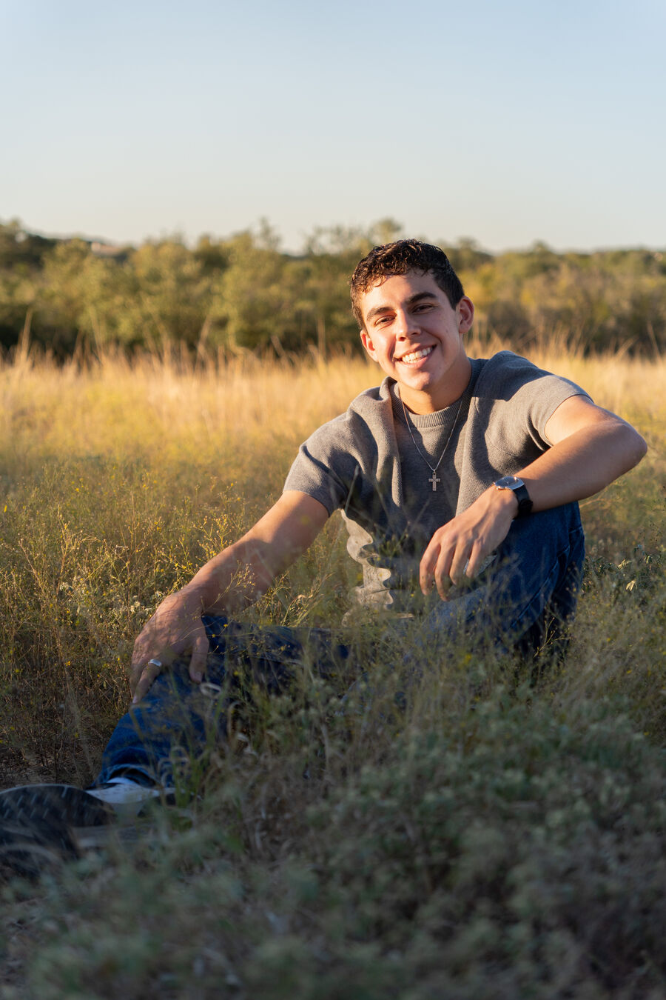
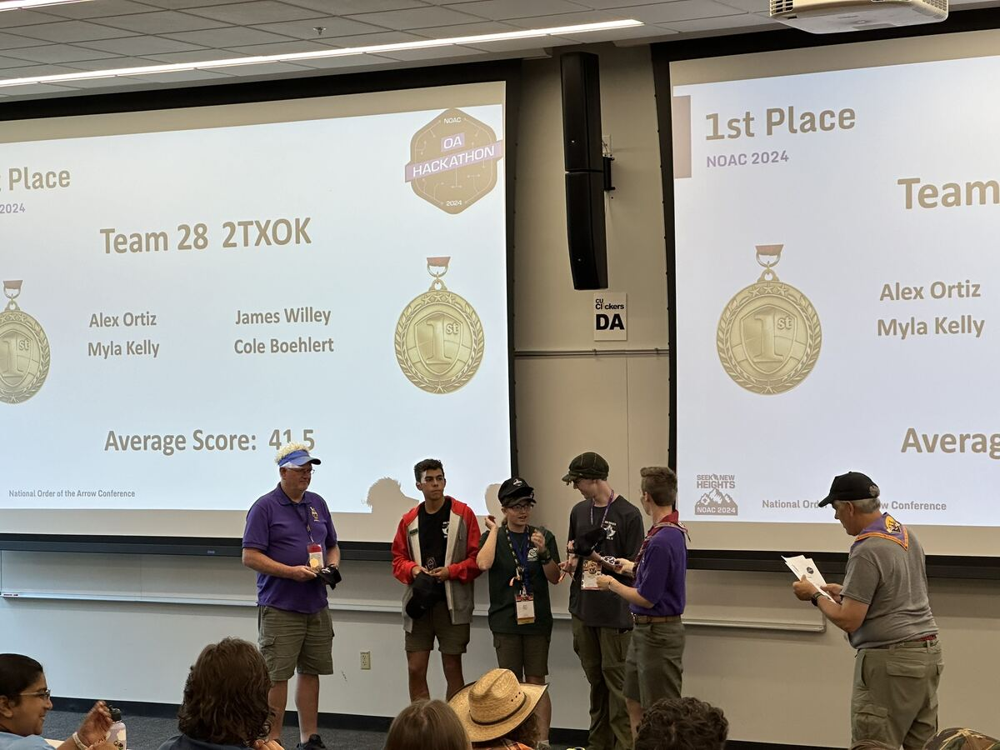
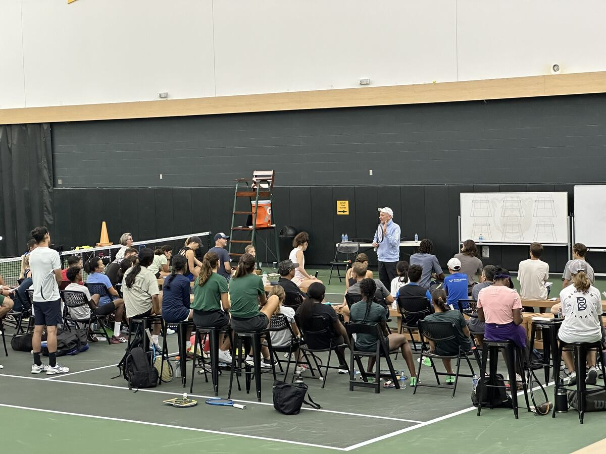
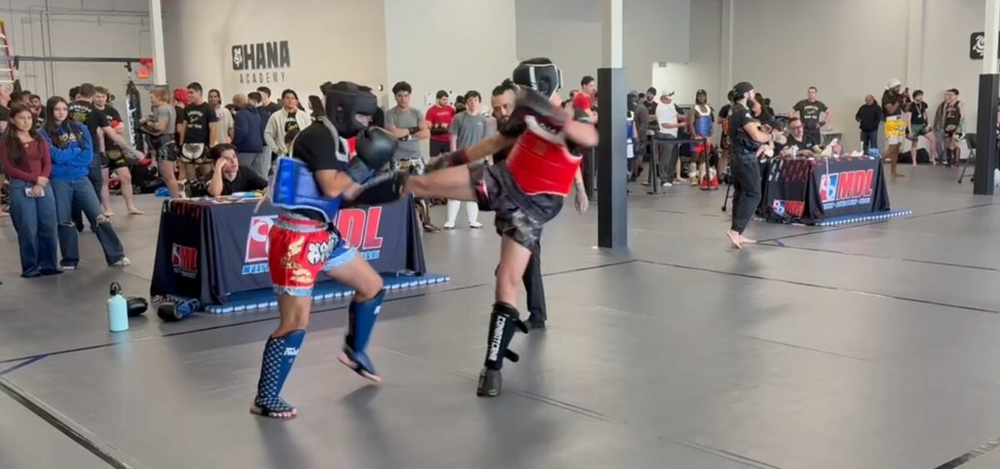
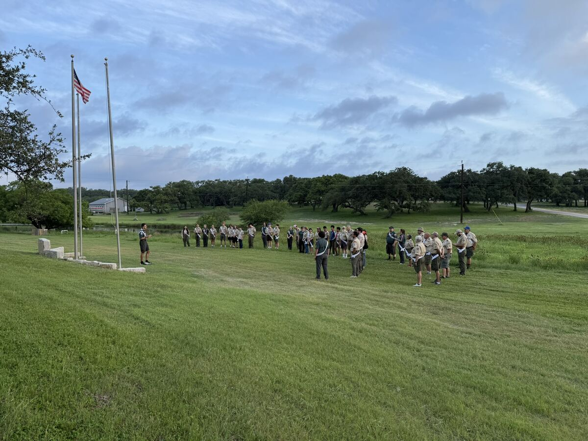

Coast Guard Academy · New London, CT
Cadet at the Coast Guard Academy. I compete in cybersecurity, build useful tools, and train hard on and off the mat.

About
I'm a cadet at the United States Coast Guard Academy, where I compete on the Academy's cyber team. Cybersecurity is my main focus, and I also build web tools that make cadet life a little easier.
Outside of cyber, I've played tennis for seven years, trained Muay Thai for the last two, and spent most of my youth in Scouting, where I grew up through leadership in the Order of the Arrow. The constant across all of it is simple: put in the reps, lead when it's my turn, and build things people actually use.
At the Academy
At the Coast Guard Academy I train and compete in cybersecurity, from Capture the Flag events to the National Cyber League, alongside a full cadet schedule. It's the work I care about most and where I spend the bulk of my time.
I compete in CTFs and play every National Cyber League season, consistently scoring near the top of the field. The challenges span web exploitation, cryptography, forensics, and reconnaissance, the same skills that carry straight into the Coast Guard's cyber mission.

My team took first at the 2024 National Order of the Arrow Conference hackathon, an early sign of the competitive coding work I do now.
Projects
A Coast Guard memorandum generator. Cadets fill in the header, body, references, and distribution, and it produces a regulation-correct memo that exports to Word or PDF.
memocraft.aortiz.org →A drilling app for fourth-class cadets to study the boards packet (ranks, missions, districts, flags, and more) with study, practice, and graded test modes plus mastery tracking.
study.aortiz.org →A match-logging tool that records every point by player, shot, stroke, court zone, and direction, then exports a full match report as CSV for later analysis.
Open the tracker →Beyond the Academy

Seven years in and still in love with the sport. It taught me that if you put your mind to something, almost anything is reachable, and someday I'd like to coach and pass that on.

I started training Muay Thai about two years ago and it's become a core part of how I stay sharp. Discipline, conditioning, and the kind of pressure you only learn by sparring.

Scouting shaped most of my leadership. As an Eagle Scout and a member of the Order of the Arrow, I led at the lodge and section level and took on the hardest trips the program offers.